写真のまま、黒い膜 → 助任珈琲豆店 → KASANE → AIMA → 白い紙。4つの切り替え直前・直後を、PCとスマホで並べました。
録画は390幅のブラウザ画面です。実機のiPhone／Androidでは未確認です。
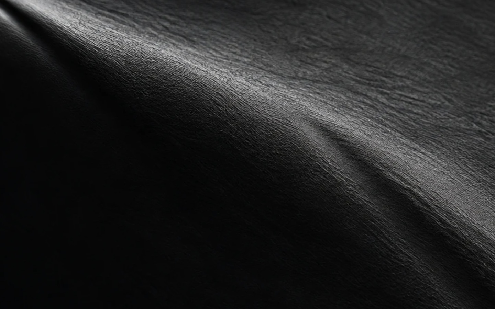
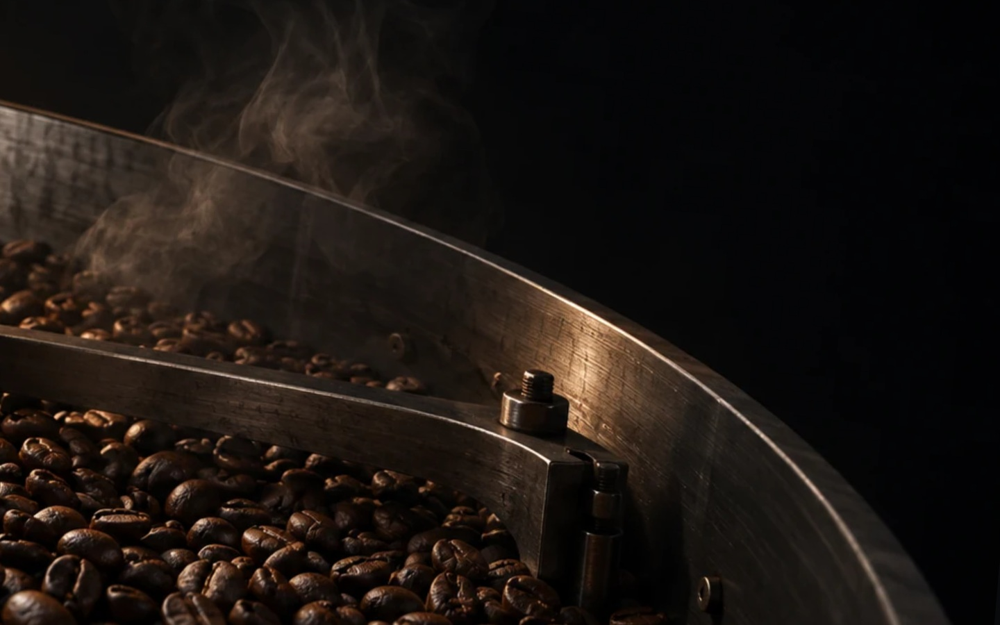
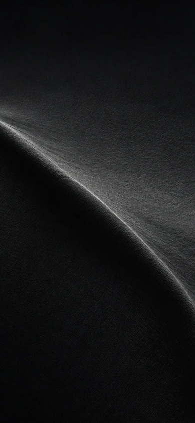
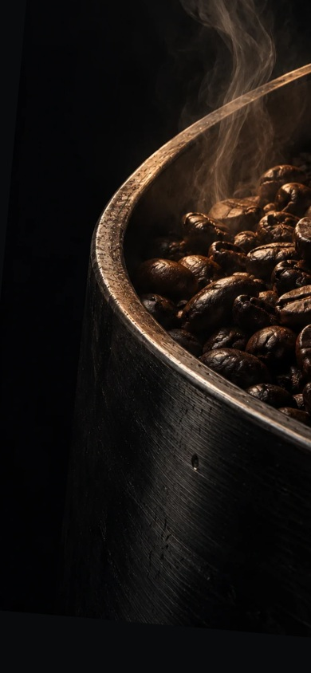
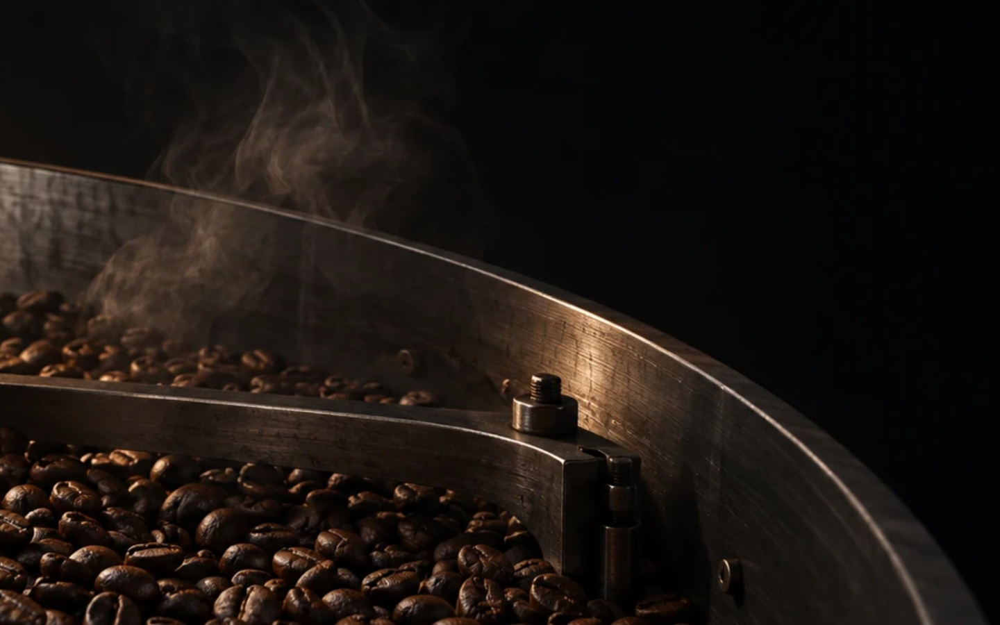
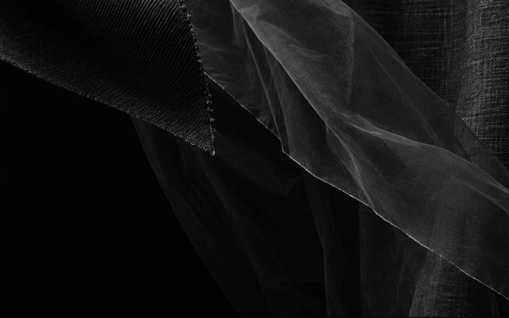
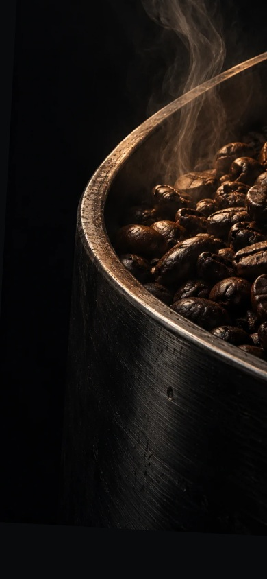
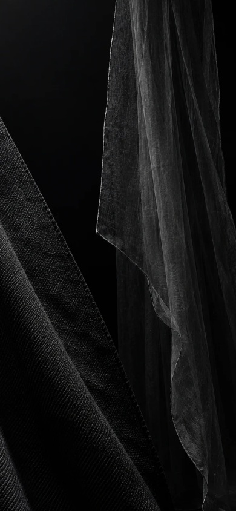
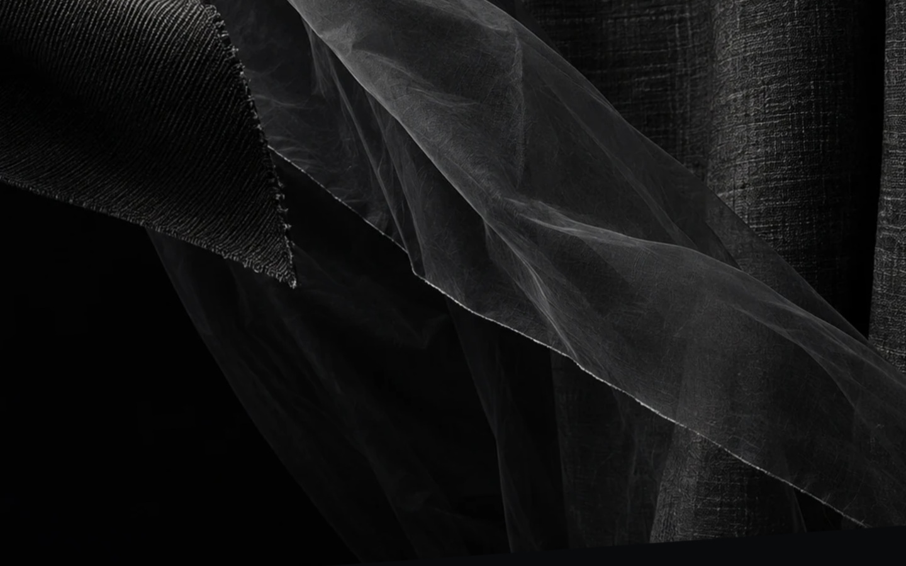
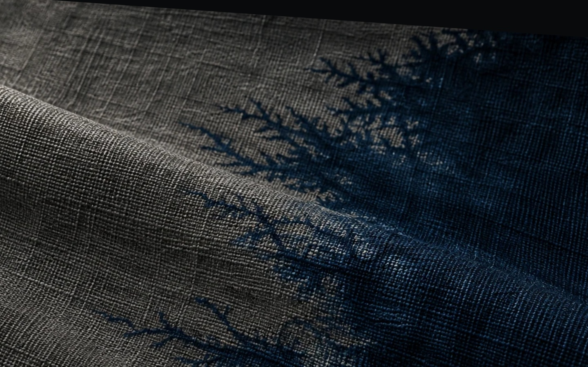
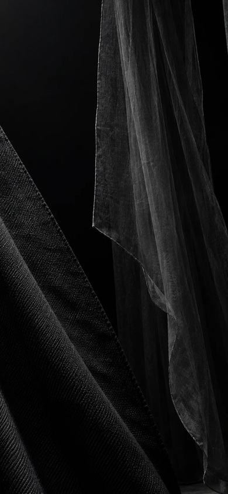
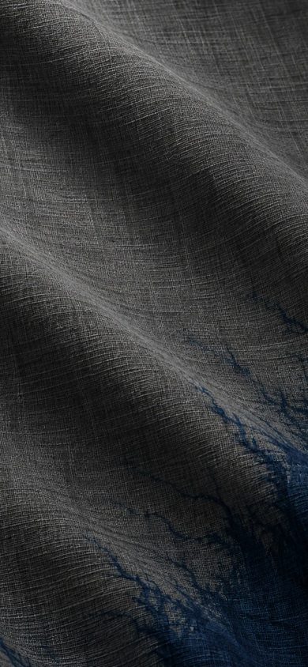
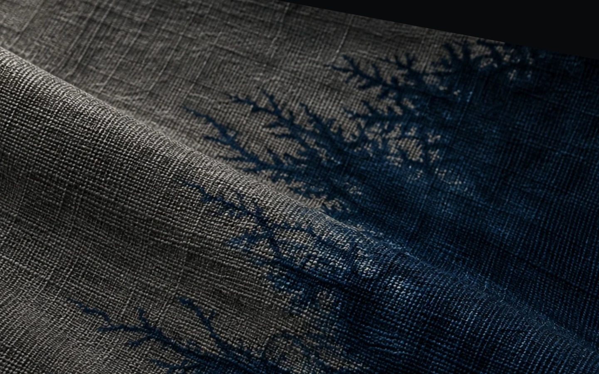
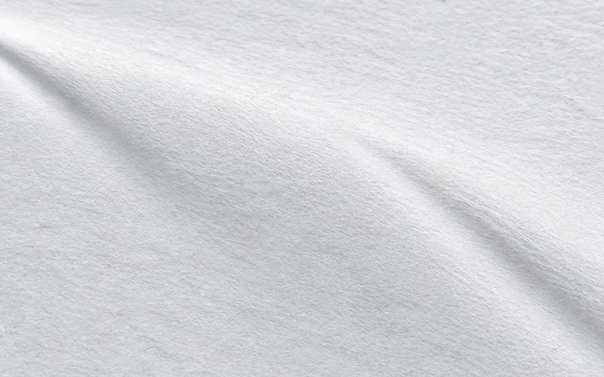
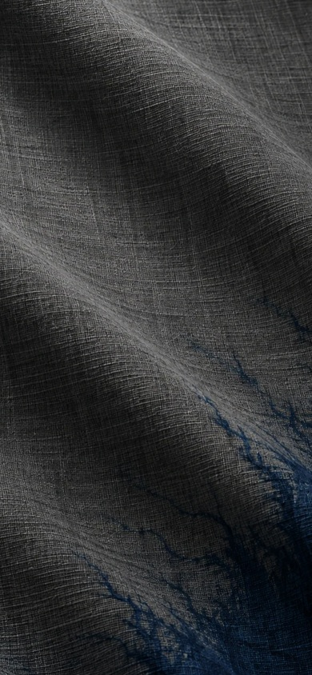
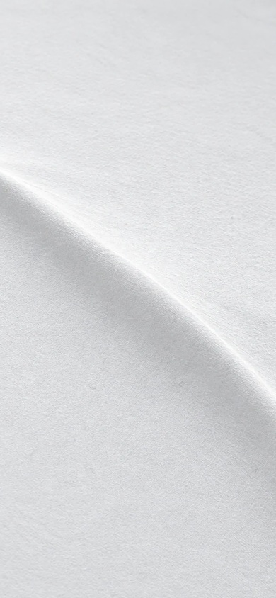
合わせた線：膜の稜線／焙煎機の縁／透ける布の端／藍の染め境ではない布の折り目／白い紙の起伏。
曲線と直線の違いは、拡大1.8倍以内では残ります。線の一点と傾きを合わせたカットとして確認してください。
16枚を1枚に並べたコマ表